In some ways, writing a computer program
is a little like magic. You can think of your computer keyboard
like Harry Potter's magic wand or like Aladdin's magic lamp.
You type in the correct incantation, and, if you do it
just right, the compiler will accept your request
and compile and run your program.
In some ways, writing a computer program
is a little like magic. You can think of your computer keyboard
like Harry Potter's magic wand or like Aladdin's magic lamp.
You type in the correct incantation, and, if you do it
just right, the compiler will accept your request
and compile and run your program.
Of course, programming really isn't magic; instead of memorizing a dusty volume of "Open Sesame", in this class, you'll learn the meaning behind each of the phrases that make up your Java programs. (I have to admit, though, that there will still be times when I'll wave my hands, and say something that sounds suspiciously like "Abracadabara". But those times will get much rarer as the semester goes on.)
Java Mechanics
To create your own Java programs,
you follow a mechanical process, a well-defined
set of steps called the edit-compile-run cycle
that looks like this:
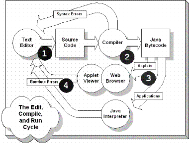
- Create your source code
- Compile the code to produce object, or bytecode
- If syntax errors occur, return to your editor to fix them
- Run your program using appletviewer or the Java interpreter
- If runtime errors occur, return to your editor to fix them
Learning this process is necessary before you can learn to program, but it is not the same as learning how to program; you must master the process, but mastering the process doesn't mean you'll write correct and elegant programs.
Here are the steps in the process:
Edit
 When you write a program in a high-level language,
you write your instructions—in the form of programming
language statements—using a plain text editor.
The document
you produce at this stage is called source code.
In Java, your source code is placed into a file with the
extension .java.
When you write a program in a high-level language,
you write your instructions—in the form of programming
language statements—using a plain text editor.
The document
you produce at this stage is called source code.
In Java, your source code is placed into a file with the
extension .java.
While you can write Java programs using a regular text editor, like Windows Notepad, your Java IDE includes a programming editor that knows all about Java's syntax rules and can display different program elements in different colors. This feature, called syntax highlighting, helps you identify inadvertent typing errors as you write your programs.
Compile
 Once you've written your program, you
compile it by using a software program called,
(surprise!), a compiler. The compiler turns
your source code into the machine language for the
Java Virtual Machine, and stores that code in a new
document. The "generic" name for this file is
object code, but the Java-specific form of
object code is called bytecode. If your
program fails to compile, (if you have "grammatical"
or syntax errors in your source code), then
you must re-edit the code until it compiles correctly.
Once you've written your program, you
compile it by using a software program called,
(surprise!), a compiler. The compiler turns
your source code into the machine language for the
Java Virtual Machine, and stores that code in a new
document. The "generic" name for this file is
object code, but the Java-specific form of
object code is called bytecode. If your
program fails to compile, (if you have "grammatical"
or syntax errors in your source code), then
you must re-edit the code until it compiles correctly.
Sun supplies a Java Development Kit (or JDK) that has a
command-line compiler named javac. Using the command-line
and the javac compiler, you can compile a Java program named
FirstApp.java like this:
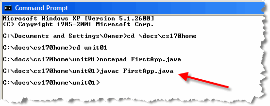
If you haven't made any syntax errors, the compiler places the Java bytecode it generates in a new file named FirstApp.class. If there are syntax mistakes, the compiler reports them on the command-line like this, and no class file is generated.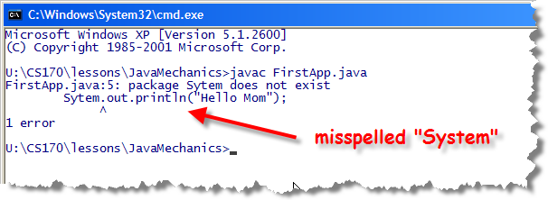
Note: On Windows or Linux, you can only use the javac compiler like this if you have downloaded and installed the Sun JDK (or, if you're on a Mac, where the JDK is installed automatically). Since you don't absolutely have to have the JDK for this class, these "incantations" might not work on your machine.
Once a program compiles without errors, it is syntactically correct. It still may contain runtime or logic errors, however. Runtime errors are errors that cause your program to "crash" when it runs, usually displaying a nasty error message on the screen. Logic errors occur when your program produces the wrong output; it may give the wrong answer or carry out an action at the wrong time, like giving you a "C" when your percentage grade in the class is exactly 80%. (This kind of logic error is called a fencepost error).
Run
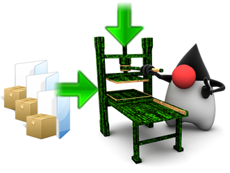
Once your program compiles, you run it. All high-level languages require a significant amount of additional machine-language code—in addition to the code you've written—before your program will actually run. This additional code is contained in collections of classes known as libraries. In Java, these different libraries are placed in special zip files known as Java Archives or JAR files.How this additional code is added to your program varies from language to language and from system to system. Generically, this is called linking, when library code is combined with the code you've written to produce and executable image in memory that can be run. With Java, this happens behind the scenes as part of the process of compiling your program, and then, again, when you run your program. There is no separate explicit linking step that you have to worry about.
Internally, Java uses something called the classpath (or build path) to know which libraries or folders to search for additional classes. Your IDE will normally take care of this for you when you use only the classes available with the JRE. When you use additional library classes (like we'll do with the ACM JTF class libraries and the JUnit testing libraries), you'll have to explicitly adjust the build path inside your IDE.
Testing
When you run your program, the first thing you'll want to do is to verify that it runs as you expect it. This process is called testing. It is not uncommon to find that your program has some logic errors that can only be discovered when the program runs. These errors may even make your program "crash". These kinds of errors are called runtime errors
To fix a runtime error, you go back to the very first step—your source code—and make changes there, repeating the edit-compile-run cycle until the program runs correctly.
Hands-On: Your First Java Programs
Well, enough theory! Let's learn how to use DrJava to create three different kinds of programs:
- a simple Java console-mode application.
- a graphical application, using simple popup windows.
- a Java applet that can be embedded inside a Web page.
Each of these "simplest possible programs" will just print your own name, along with a little message, when you run them.
 Make sure you have installed and configured the OCC version of
DrJava before you start. Your instructor will provide you with
a handout containing detailed instructions, or, will provide
you with instructions during your lecture.
Make sure you have installed and configured the OCC version of
DrJava before you start. Your instructor will provide you with
a handout containing detailed instructions, or, will provide
you with instructions during your lecture.
Go ahead and start DrJava on your own machine and then follow along.
Step 1: Source Code
As you know from earlier in this section, the first step in
writing a computer program is to type the Java instructions
that your program should follow. In DrJava, you'll type your
source code in the Definitions Pane in the top-right
portion of the screen:
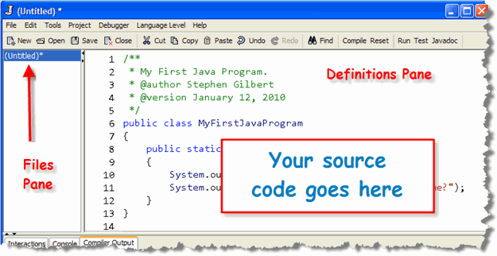
When DrJava starts up, it creates an Untitled blank file in the left pane (called the Files Pane). All you have to do is to add the rest of the code! Of course, you don't know the Java programming language (yet!!!), so all you have to do right now is type in the code I've supplied here: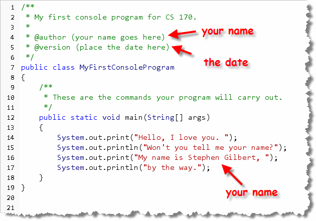
Make sure you replace the text following the @author tag with your name. (Delete everything following, including the parentheses). Do the same thing with the following (@version) line, replacing the placeholder with the date that you completed the work. Finally, make sure you replace my name with your own in the third
statement inside the main() method. (Line 16 in
the screenshot.) When you've typed in all of the code shown here,
save your file. Since we haven't saved this file before, navigate
over to the Chapter01 folder, and save the file
 Notice that DrJava automatically supplies a name (MyFirstConsoleProgram)
that matches the name of the class in the definitions pane. DrJava
also supplies the
Notice that DrJava automatically supplies a name (MyFirstConsoleProgram)
that matches the name of the class in the definitions pane. DrJava
also supplies the .java extension if you fail to type
it in.
Step 2: Compile Your Code
Once your program is successfully saved, you'll need to convert
it to Java machine code (called bytecode) that the computer
can understand. You can do this in two ways:

- Right-click the name of the file you want to compile in the Files Pane, and select Compile from the context menu. This is how you compile a single file.
- Click the Compile button on the toolbar. This compiles all open files.
Both of these commands are also available from the Tools
menu and by using the hot-keys F5 and Shift-F5
 If you have no typos in your code (called syntax errors or
compile-time errors in programmer-speak), you'll see a message
from DrJava that looks like this:
If you have no typos in your code (called syntax errors or
compile-time errors in programmer-speak), you'll see a message
from DrJava that looks like this:

 If you look in the directory where you saved your file, (using
Windows Explorer or the Mac Finder), your folder now has
two files: MyFirstConsoleProgram.java and the compiled
bytecode file, MyFirstConsoleProgram.class.
If you look in the directory where you saved your file, (using
Windows Explorer or the Mac Finder), your folder now has
two files: MyFirstConsoleProgram.java and the compiled
bytecode file, MyFirstConsoleProgram.class.
Fixing Errors
If you make a mistake when writing your program,
then DrJava will display an error message when you try to compile
your code. For instance, if you misspell the word static
as statix, you'll see something that looks like
this:
 As you select the different errors in the Compiler Output Pane,
DrJava will do its best to place the cursor near or at the error
in the editor.
As you select the different errors in the Compiler Output Pane,
DrJava will do its best to place the cursor near or at the error
in the editor.
Remember, you must compile your code (without errors), before you can run your program.
Step 3: Run Your Program
Compared to what you've gone through so far, running your
program is kind of simple:
 You can:
You can:
- use the menu command Tools->Run Document's Main Method.
- press the F2 key.
- click the Run button on the toolbar.
If all goes well, your output will appear in the DrJava
Interactions Pane like this:
 Notice that the Interactions Pane shows (1) the command used to
launch your program (just as if you typed it at the shell window),
and (2) the output of your program.
Notice that the Interactions Pane shows (1) the command used to
launch your program (just as if you typed it at the shell window),
and (2) the output of your program.
DrJava also has a Console Pane where you can see the
output without seeing the command used to run your program:
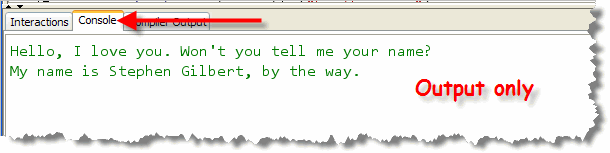
Other Errors
Of course, even if your program compiles and runs, that doesn't
mean it's correct! When you run your program, it may contain
runtime errors that cause it to crash or hang, like this:
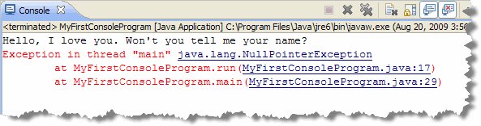
Even if your program doesn't crash, it still may not produce the
output that you expect. This time of error is called a logic
error. Here's an example:

Step 4: Test Your Program
As you just saw, even though your program produces output, that output may not be "correct". What do we mean by correct output? Well, correct output is when your program does "what it is supposed to do". Let me give you an example:
In this case, your program is supposed to:
- Produce two lines of output
- Contain your name, not mine, on the second line
You can test your program by running it and then manually looking at the output to see that it meets those requirements. For a simple program like this, that's fairly easy. For more complex programs, though, that can get pretty tedious, and error-prone.
A better solution is to run a unit test. A unit test is simply a program that runs your program, and then compares its actual output to the output it would produce if it ran correctly. Later on, you'll learn to write your own unit test programs, (that's what the DrJava "Test" buttons do), but for the first portion of the course, you'll just use unit test programs that I've written.
Running CheckResults
To run the unit tests for your exercises or homework assignments,
you'll use the CheckResults program that I've supplied:
 To test your code:
To test your code:
- Click the Check button on the DrJava tool bar.
- When the Check Your Assignments dialog window appears, locate the prewritten unit test program that I've supplied. Since I've supplied you with a test program for MyFirstConsoleProgram, you'll choose that.
- Finally, just click OK and the unit tests for you program will be run in the DrJava Interactions Pane window.
When the tests are run, each test will be listed, along with "weight"
assigned to that test. As you can see, some tests count more than others.
 Passing tests are printed in green, and failing tests are printed in
red. As you can see, my program passed all of the tests except for
the one that checked to see if you replaced my name with yours.
(Of course, my name really is Stephen Gilbert,
so I guess that doesn't count.) At the very bottom, you'll see the
weighted average of the number of tests that pass.
Passing tests are printed in green, and failing tests are printed in
red. As you can see, my program passed all of the tests except for
the one that checked to see if you replaced my name with yours.
(Of course, my name really is Stephen Gilbert,
so I guess that doesn't count.) At the very bottom, you'll see the
weighted average of the number of tests that pass.
Checking Style
Although the majority of your programming problems will be evaluated based on correctness, as reported by the Check program, about ten percent of each program will be graded on style: your adherence to a specific set of layout and naming conventions.
We'll get started learning the CS 170 style rules in the next section. For right now, though, you can check the program you've just written by clicking the Style button on the toolbar:
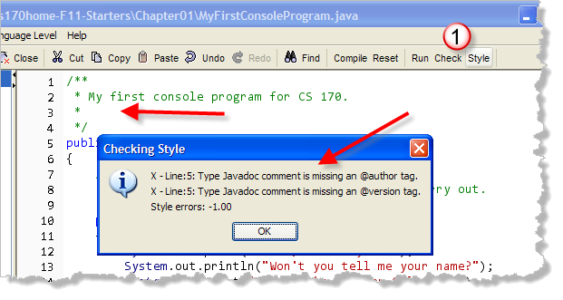
When you click the button, you'll be able to see the number of style errors along with a short error message about each problem. In my case, there are two errors, since I haven't added my name or date to the beginning of the file in the form that it was required.If you run Style and see any errors that talk about indentation, simply select all the lines in the file (with Control + A) and then choose Indent Lines from DrJava's Edit menu.
More Hands On: Your First GUI Application
Console programs display their output inside a plain text window. This plain text window can be a "shell", like the Windows command-prompt, or a graphical console window such as that provided by DrJava. Java can also create different kinds of GUI or graphical programs. Some of these programs, called applets, run "inside" a Web page. Others, like DrJava, are called GUI applications and these programs create their own stand-alone windows for input and output.
The simplest kind of GUI application uses predefined dialog windows
from the JOptionPane class. Below, you'll find the
source code for such a simple GUI application. Notice that even though the code is
a little different, the mechanics of creating the program are
exactly the same.
Go ahead and use DrJava to create your first Java GUI program, just
like you did with your first console program. In the editor window,
type the code I've provided here:
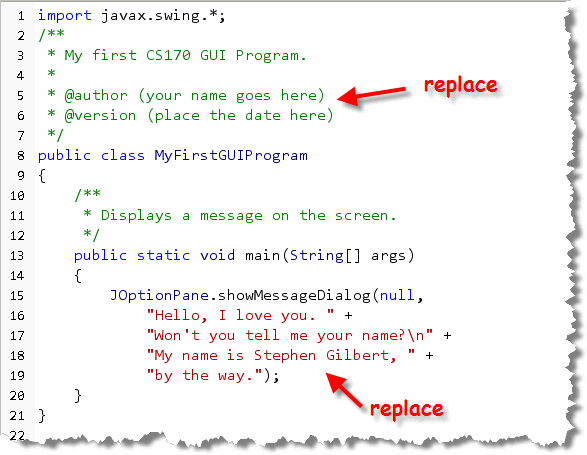
As before, replace the placeholders with your name (in both the heading and the message) and the date (in the heading). After you've compiled your code, you can run it just like you
would a console program. Here's the output on my machine.
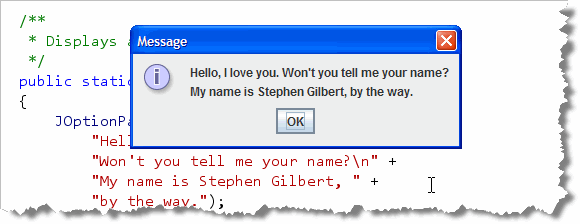
GUI programs like this are more difficult to test, so you'll see there are no predefined unit tests written for MyFirstGUIProgram when you click the Check button. In general, while you're first learning the language, sticking with simpler console programs makes things easier.In a few weeks, though, you'll learn how to write much more sophisticated GUI applets and applications that make use of images, sounds and animation.
Even More Hands On: Your First Java Applet
Java applets, you remember, are Java programs that run "inside" a Web page. But, while Java applets are run differently than Java applications, the mechanical process of creating an applet is identical.
To create your first Java applet, just click the New button
to create an untitled definitions document. Then, type in the code
I've provided here:
 As before, replace the placeholders with your name (in both the
heading and the message) and the date (in the heading).
As before, replace the placeholders with your name (in both the
heading and the message) and the date (in the heading).
Although we won't cover graphical output in this chapter, you should know that it's a little bit more difficult than console output, since the sizes of the individual characters that make up your message are different on each platform your program runs on. You may need to adjust the "horizontal" numbers (shown with arrows in the screenshot), to get the output to appear as you want it, especially because your name will be a different size than mine is.
Save, Compile and Run
Click the Save button to save your applet. DrJava will automatically give it a name (MyFirstJavaApplet.java). Save the file in your Chapter01 folder. Then, compile it just as you did the previous two programs. If you have any syntax errors, correct your code and recompile.
Running an applet is a little different than running an application.
- First, an applet can't be run directly. Since it is designed to be viewed inside your Web browser, it has to be loaded by being referencing in an HTML page, using an applet tag.
-
Second, an applet doesn't create its own window, but needs
another program, like a Web browser, to supply its display
window.

Fortunately, (as you might have guessed), DrJava takes care of both of those details for you. When you click the Run button, DrJava notices that you are trying to run a Java applet and it opens a special Applet Viewer program, and loads your new applet into it, like this.
Practice, Practice, Practice
As you know, a good portion of your grade in this class is based on your performance on several practical programming proficiency quizzes. Since these are skill-based quizzes, there's really no way to "cram" for them; the only practical strategy is to get lots of practice.
Your instructor will give you several exercises that are similar to the problems (or a portion of the problems) on the programming quizzes that you'll take. The first quiz requires you to write simple, console-mode output programs. The first step to doing that is to follow the steps in this section to create, compile and test a program.
Since the quizzes are closed book, you'll need to memorize the steps you need to follow. Go ahead and study the steps in this lesson, and then try to complete the practice exercises your instructor has supplied. I expect that you'll need to refer to your notes for the first one, but you should be able to get a little farther on each problem.

Java Mechanics Summary
- To create a Java program, you edit your source code, compile it to produce bytecode, and then run the program using a Java Virtual Machine.
- You can use the command-line tools in the Java Development Kit (JDK) to compile and run your code, but it is easier to use a specialized Integrated Development Environment or IDE. We will use DrJava in this book.
- Mistakes discovered when you compile your programs are called syntax errors. You must correct your syntax errors and recompile your programs before you can run them.
- Runtime and logic errors occur when your program "crashes" the JVM, or when your program produces incorrect output when it is run.
- Testing is used to check for logic errors. Unit tests compare the expected output of your program, (often under several different input conditions), with the actual output produced when it runs.
- Style checking is used to make sure that your program follows the conventions required for this course.